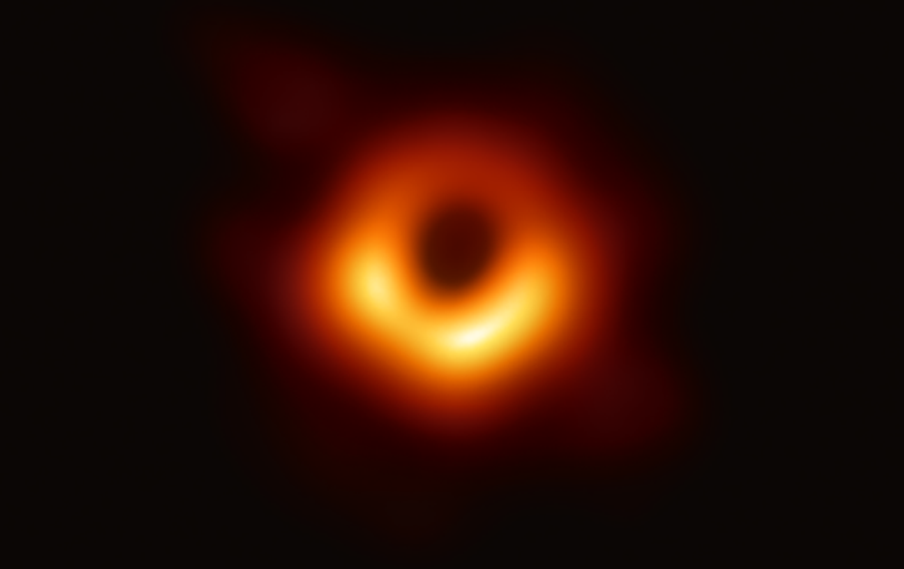

O que são Buracos Negros?
Um buraco negro se trata do resultado da explosão de um estrela MUITO massiva, de pelo menos 8 vezes a massa do sol, após essa explosão o que sobrara será um buraco negro, uma região no espaço-tempo que será infinitamente densa, tão densa que a velocidade necessária para sair de seu campo gravitacional tem que ser maior que a velocidade da luz, sendo esse o motivo dele ser completamente escuro.
No centro da nossa galáxia, assim como de todas as outras, há um buraco negro, mas não e um buraco negro simples com uma massa de 8 sois, e sim um buraco negro ancião com a massa de BILHOES de sois, seu nome e Sagitarius A.
Sagittarius A

M87
Galáxia Messier 87
O buraco negro da galáxia Messier 87, também conhecida como M87, ficou famoso pois em 10 Abril de 2019 foi tirada uma foto dele usando os telescópios da Event Horizon Telescope, que foi um projeto que espalhou telescópios pelo mundo todo para enfim conseguir fotografar o bendito do buraco negro, a foto pode não parecer de boa qualidade mas isso se deve ao fato desse monstro de bilhões de massas solares estar a milhões de anos luz de distancia da terra.
Katherine Louise Bouman é uma professora assistente de ciência da computação no Instituto de Tecnologia da Califórnia, e foi ela que fez o principal algoritmo de computador para a foto do buraco negro ser processada, e mesmo assim, a foto demorou meses ate poder ser completamente gerada do jeito quer nos conhecemos.